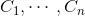
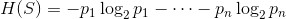
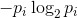
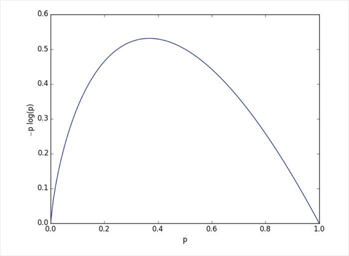

17.2 熵
为了建立一个决策树，我们需要决定提出哪些问题，以及这些问题的提问顺序。树的每个阶段都存在一些不确定性，其中有些不确定性已经被我们消除，而另一些则依旧存在。当知道该动物的腿不超过五条后，我们就已经排除了它是蝗虫的可能性。但是，这并没有排除它是鸭子的可能性。对于每一个可能的问题，我们都可以根据其答案对剩余的可能性空间做进一步分割。
理想情况下，我们当然愿意选择那些具有能够给决策树的预测提供更多信息的答案的问题。如果有一个是 / 否问题，并且答案为“是”的时候输出为 True ，而答案为“否”的时候输出为 False （反之亦然），那么这样的问题自然是我们的首选了。相反，如果一个是 / 否问题的答案无论是啥都不能为预测提供新信息的话，那么它就不是一个好的选择。
我们用熵 （entropy）这个概念来指代“信息含量”，此外，这个词还常用来表示混乱程度。在这里，我们用它来表示与数据相关的不确定性。
假设我们有一个数据集 S ，每个数据元素都标明了所属的类别，即元素属于有限类别  中的一种。如果所有数据点都属于同一类别，那么也就不存在不确定性了，这就属于我们喜闻乐见的低熵情形。如果数据点均匀地分布在各个类别中，那么不确定性就较大，这时我们说具有较大的熵。
从数学的角度来讲，如果 pi 表示 ci 类别中的数据所占的比例，那么可以把熵定义为：

按照通常的约定，0log 0=0。
对于这个定义，我们不必关心其中的细枝末节，只要明白每一个  项都是非负的，并且当 pi 接近 0 或 1 时，熵的值也接近 0（如同图 17-2 所示）即可。

图 17-2：-p log p 的图像
这就意味着，当每一个 pi 越接近 0 或 1 时（即当大部分数据都属于同一个类别时），熵就越小；当许多 pi 不接近 0 时（即当数据广泛分布于众多类别中时），熵就越大。这正是我们所期望的特性。
我们可以轻而易举地将上面的定义编写为一个函数：
def entropy(class_probabilities):
"""given a list of class probabilities, compute the entropy"""
return sum(-p * math.log(p, 2)
for p in class_probabilities
if p) # 忽略零可能性
我们的数据点是由一对 (input, label) 组成的，这就意味着类别概率需要我们自己来计算。需要注意的是，我们并不关心标签与概率之间的关联，我们只在乎概率本身：
def class_probabilities(labels):
total_count = len(labels)
return [count / total_count
for count in Counter(labels).values()]
def data_entropy(labeled_data):
labels = [label for _, label in labeled_data]
probabilities = class_probabilities(labels)
return entropy(probabilities)